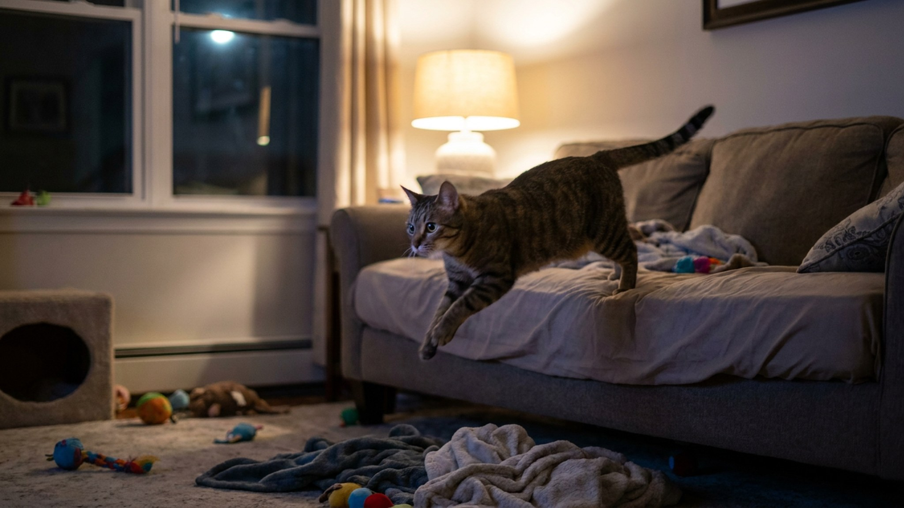

03:12. Топот по паркету, грохот упавшей чашки, кот несётся по спинке дивана. Потом тишина. Потом снова. Это не сумасшествие — это «зумис» (zoomies), и у них есть конкретные биологические причины. По данным исследований Университета Миссури (2023), 67% владельцев домашних кошек сообщают о нарушении сна из-за ночной активности питомца. Хорошая новость: это корректируется. Пять причин, почему так происходит, и точный план действий.
🐾 Не уверены, что это опасно?
Опишите симптом в AnimaLife — AI-ветеринар за минуту подскажет, что в пределах нормы, а когда пора к врачу.
Кошки — не ночные животные в строгом смысле. Они сумеречные (crepuscular): пик активности приходится на рассвет и закат. В дикой природе это оптимальное время охоты — мышевидные грызуны активны в сумерках, а кошачье зрение в условиях полутьмы превосходит как дневное, так и ночное.
Домашняя кошка сохранила этот цикл, но человеческий распорядок смещает его. Хозяин весь день вне дома, кошка спит. Вечером хозяин приходит — кошка немного активизируется. Хозяин ложится спать в 23:00, а у кошки цикл активности только набирает обороты. Итог — 3 часа ночи, зумис.
Суточный ритм регулируется гормоном мелатонином и светом. У кошек концентрация мелатонина ночью значительно ниже, чем у людей, что объясняет меньшую склонность к глубокому ночному сну.
Самая частая причина. Кошка, которая провела день в одиночестве и не играла, накапливает энергию. К ночи её нужно куда-то деть — и выбрасывается она в виде интенсивных спринтов по квартире.
Исследования поведения кошек (Journal of Feline Medicine and Surgery, 2022) показывают: кошки, которые получают менее 15 минут активной игры в день, в 3,4 раза чаще демонстрируют ночное гиперактивное поведение.
Решение:
Природный ритм кошки — несколько мелких трапез в течение суток, включая ночные. Если кошка ест два раза в день (утро и вечер), к 3 ночи она голодна по биологическим часам. Голод активизирует охотничий инстинкт — и начинается «поиск добычи».
Решение:
Ночные зумис, начавшиеся внезапно у взрослой или пожилой кошки, — повод насторожиться. Несколько заболеваний вызывают ночное беспокойство:
Если зумис появились после 7 лет, начались резко или сопровождаются вокализацией — обязательно к ветеринару. Анализ крови с T4 и измерение давления.
Квартира без обогащения для кошки — сенсорная камера. Ночью, когда хозяин спит, стимулов и вовсе ноль. Мозг кошки создаёт их самостоятельно — в виде «спонтанной охоты» на тапки и ноги под одеялом.
Решение через обогащение среды:
Это поведенческая ловушка. Кошка прыгает на голову в 3 ночи → хозяин встаёт и кормит, чтобы угомонить → кошка запоминает: «ночная активность = еда». Цикл закрепляется.
По классической оперантной обусловленности, даже нерегулярное подкрепление (хозяин встаёт «иногда») создаёт самый устойчивый паттерн поведения — именно такой, который сложнее всего убрать.
Решение:
Это работает у большинства кошек за 1-2 недели при последовательном применении:
Наказание — кричать, брызгать водой, закрывать в ванной в качестве «воспитания». Это создаёт стресс и разрушает доверие, но не меняет биологический цикл активности. Кошка не понимает «наказание за 3 часа назад».
Успокоительные без диагноза — феромоны (Feliway) помогают при стрессе, но на зумис от скуки или голода не влияют. Медикаментозная седация без показаний — вред здоровью без решения проблемы.
Просто «потерпеть» — если ничего не менять, ничего не изменится. Биологический ритм кошки не подстроится под человека сам по себе. Нужна структура: игра, кормление, среда.
В этих случаях «обогащение среды» не поможет — нужна диагностика и лечение основного заболевания.
🐾 Питомец ведёт себя странно?
AnimaLife расшифрует поведение кошки и собаки и подскажет, что делать. Попробуйте бесплатно прямо в мессенджере.